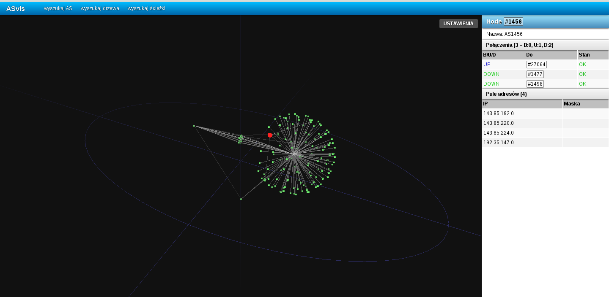
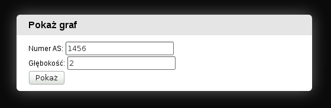
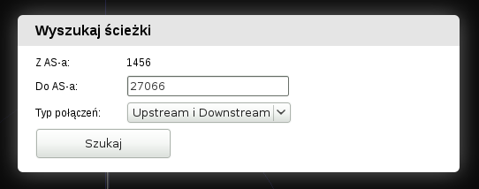
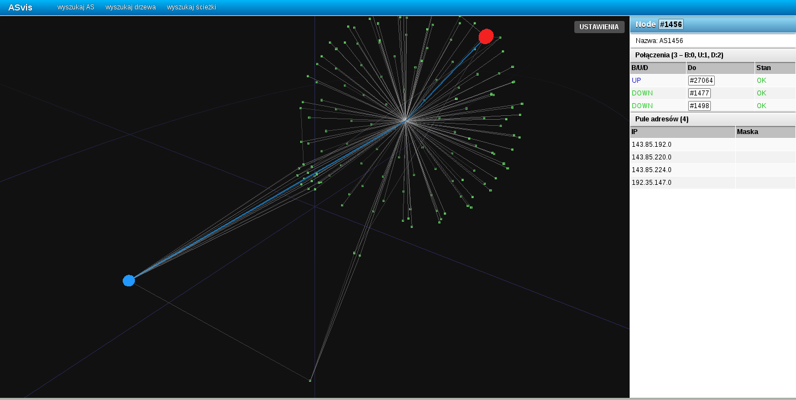

Do prawidłowego działania aplikacja ASvis wymaga przeglądarki internetowej wspierającej wspierającjej WebGL, oraz karty graficznej kompatybilnej z WebGL (czyli zasadniczo każdej nowszej niż 6 lat).
W chwili pisania dokumentacji przeglądarkami wspierającymi WebGL są Google Chrome w wersji 15 lub nowszej i Mozilla Firefox w wersji 8 lub nowszej, a z tych dwóch Chrome ma wyraźnie lepszą wydajność przetwarzania JavaScriptu w którym napisana jest większość aplikacji, dlatego polecamy Chrome'a jako przeglądarkę do pracy z ASvis. Jedynym mankamentem Chroma jest brak supportu WebGL dla kart graficznych AMD/ATI pod Linuxem.
Jeżeli WebGL nie będzie dostępny, aplikacja będzie działać w trybie kompatybilności, DUŻO wolniejszym, i nie wyświetlającym wszystkich elementów graficznych, lecz wystarczającym do pracy z aplikacją
Aby otworzyć aplikację wystarczy w przeglądarce internetowej wpisać adres URL serwera aplikacji. Otworzy się stona aplikacji, z domyślnie otwartym zapytaniem o podanie numeru AS oraz głębokości wyszukiwania. (patrz Przeglądanie połączeń)
Ekran aplikacji podzielony jest na 2 części. Po lewej stronie znajduje się miejsce w którym wyświetlana jest trójwymiarowa reprezentacja połączeń pomiędzy ASami. Aktualnie wybrany AS jest zaznaczany jako czerwone koło. Po prawej, na pionowym pasku, wyświetlane są informacje dotyczące wybranego ASa - jego numer, nazwa, lista połączeń (wraz z ich typem i stanem), i lista pól adresów.
Nawigacja w trójwymiarowym widoku jest bardzo prosta:
Po najechaniu kursorem na któryś z wyświetlanych ASów pojawi się dymek z jego numerem i nazwą. Kliknięcie na numerze spowoduje przeniesienie do przeglądania połączeń z tym ASem jako źródłowym. (patrz Przeglądanie połączeń)
Panel z prawej strony, oprócz wyswietlania informacji o wybranym ASie pozwala nawigować po połączeniach - kliknięcie na numer ASa z listy połączeń spowoduje jego wybranie. (patrz Przeglądanie połączeń) Ponadto przytrzymanie kursora nad danym połączeniem powoduje oznaczenie tego połączenia na grafie czerwoną linią.
Przeglądanie połączeń pomiędzy ASami polega na przeglądaniu wycinka całej sieci połączeń. Wycinek taki zorientowany jest wokół wybranego ASa, nazywanego tutaj źródłowym. Połączenia wczytywane są w zależności od zadanej głębokości wyczukiwania.
Głębokość wyszukiwania jest parametrem określającym jak dalecy sąsiedzi ASa źródłowego mają zostać pokazani. Głębokość 1 oznacza tylko bezpośrednich sąsiadów, bo tylko do nich można dotrzeć z ASa źródłowego przechodząc po maksymalnie 1 połączeniu. Głębokość 2 wyszuka sąsiadów do których można dotrzeć z ASa źródłowego przechodząc po maksymalnie 2 połączeniach, itd
Ja sam nie rozumiem co tu się dzieje więc to będzie musiał opisać ktoś inny.
Wyszukiwanie ścieżek pozwala na znalezienie najkrótszych ścieżek łączących dane AS-y. Mając wybrany AS źródłowy (Przeglądanie połączeń) klikamy wyszukiwanie ścieżek i wprowadzamy nr ASa docelowego. Następnie wybieramy czy wyszukujemy ścieżkę prowadzącą DO ASa źródłowego (Downstram), OD (Upstream) czy w dowolnym kierunku (Downstream i Upstream)
W wyniku zostaje zaznaczona na niebiesko znaleziona ścieżka (lub ściezki, jeżeli jest więcej niż jedna o tej samej długości)
